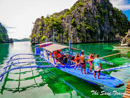
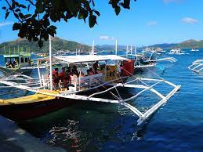

Let us discover the Beauty of Siargao


Introduction
Coron, one of the top tourist destinations in the Philippines, is best known for world-class World War II-era wreck diving.
Coron is one of Palawan's most popular beach and island destinations.
Coron is the third-largest island in the Calamian Islands in northern Palawan in the Philippines.
History
The Coron island area is famous primarily for its World War II wreck dives, and the site has been named in many lists of top dive spots in the world.
Coron is a 1st class coastal municipality of Palawan Province Mimaropa, Philippines.
Long before the coming of the Spaniards to the Philippines, Busuanga Island where Coron is located was populated by the Tagbanuas and Cuyonons.
Coron was created as a municipality by the American authorities in 1902. Two years later, the island Culion was removed from the jurisdiction of Coron. In 1950, several barrios were separated to form the municipality of Busuanga. Later, the Linapacan group of islands became an independent municipality.
https://peoplaid.com/2020/09/21/coron-palawan/The first inhabitants of Coron were the Tagbanuas who belong to the second wave of Austronesians who migrated to this area some 5,000 years ago. They were a nomadic, seafaring people, living mainly by fishing and subsistence agriculture. Although they are now sedentary, they maintain many of their old customs, traditions and beliefs. Today, the Tagbanuas remain the dominant if not entire population of Coron. Coron was registered as a town and its name was changed from "Penon de Coron" to "Coron".
From 1939 to the outbreak of World War II, the municipality experienced the mining boom. Labor shifted from farming to mining. In July 1942, the Japanese occupied the mining camps and resumed operation of the manganese mines. On September 24, 1944, a group of Japanese ships were sunk by American warplanes in Coron waters as the ships retreated from Manila Bay. About 10 or 12 of these World War II Japanese shipwrecks comprise what is considered one of the best dive sites in the world.
In 1947, large scale deep sea fishing was introduced to Coron, and the town experienced another boom, a fishing boom. The population increased, as many people from Luzon and the Visayas came to work either as fishermen or miners. Coron used to be virtually unknown outside of Palawan. It remains a small, quaint fishing town with laid back charm but with increasing media exposure it is growing, slowly but steadily, Coron has taken an important position in the tourism industry. There has been a rapid influx of scuba divers and other tourists coming in, making tourism the major industry player in Coron today.
https://en.wikipedia.org/wiki/Coron,_PalawanActivities
- Snorkeling


- Scuba diving


- Boat tours
 
- Parasailing


- Dolphin watching


Without a doubt, Coron has some of the most pristine beaches I've ever seen. They're remote, not as crowded as other places in The Philippines, are tough to get to and thus, are as natural as it can get and extremely gorgeous! Coron is also a diver's paradise, offering numerous shipwreck diving sites and coral gardens.